Colouring books for kids
Milo and his family to colour in, in English and Afrikaans.

Milo Colouring Around the World
Milo kleur om die wêreld in
Where shall we fly today? Milo and his family climb into their hot-air balloon among the fairy chimneys of Cappadocia and fly west, all the way around the world.
- 52 pictures from 35 countries on 6 continents
- Famous places, crafts, food, festivals, nature and animals
- A picture key at the back: where each picture is, with a short fact in English and Afrikaans
- Single-sided pages, so markers never spoil the next picture
- Detailed, clear line art for ages 6 to 12, on large 8.5 x 8.5 in pages


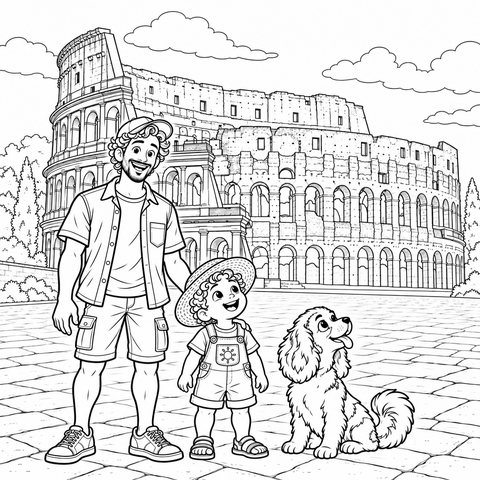
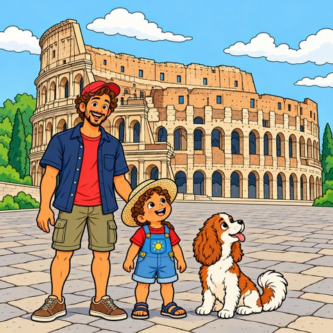
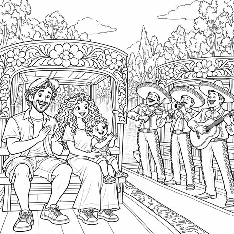
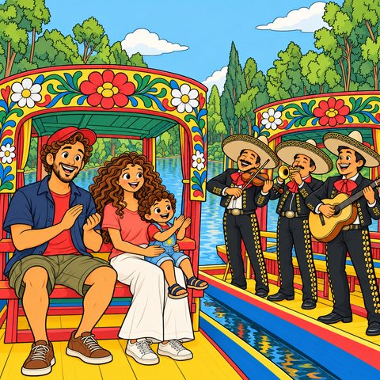
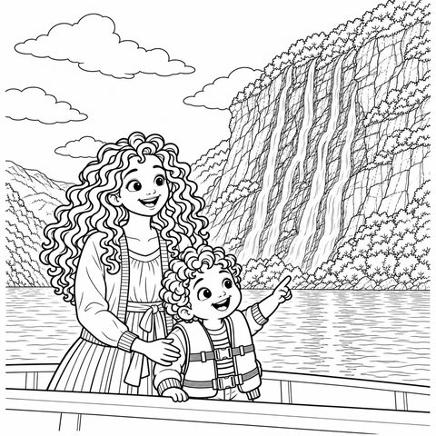
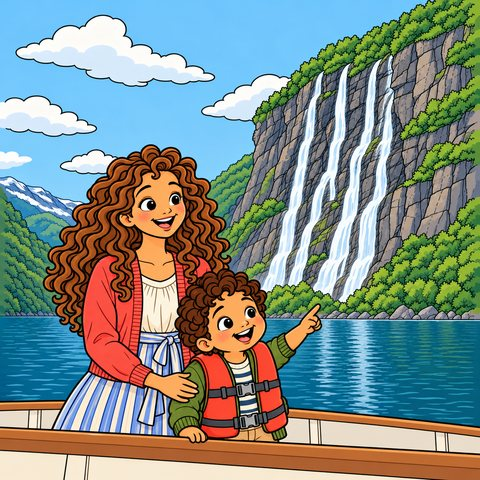
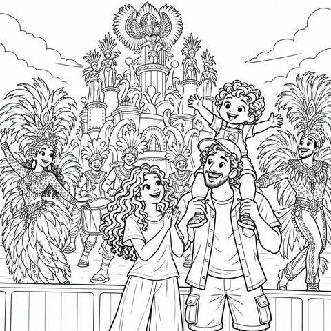
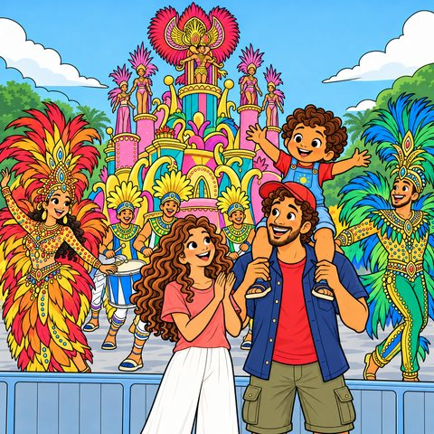
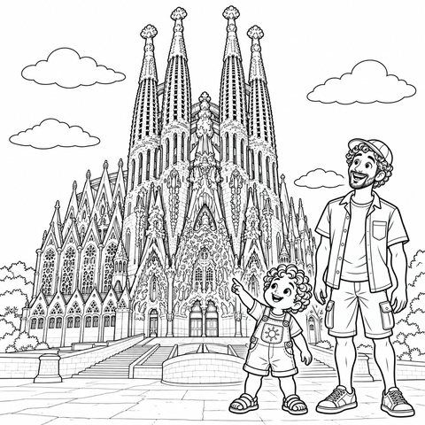
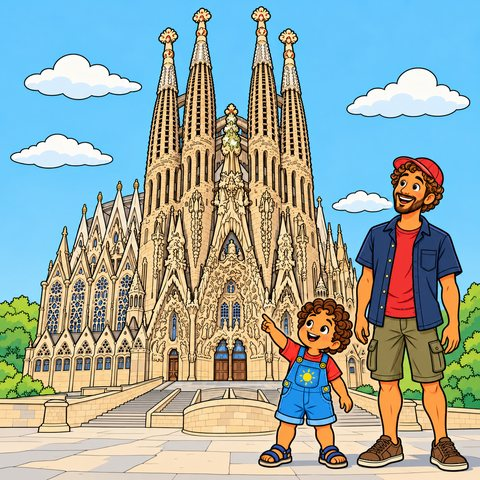
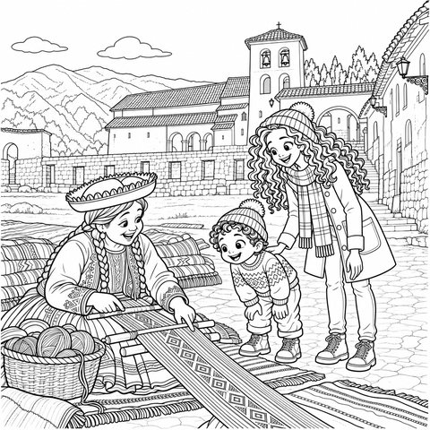
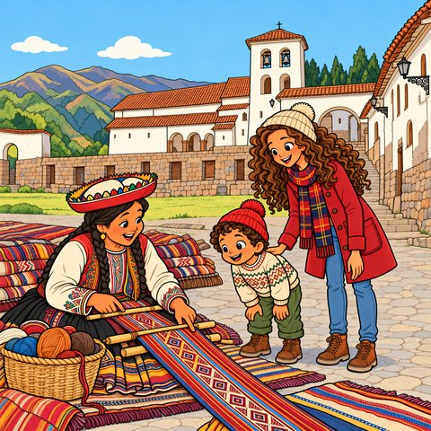
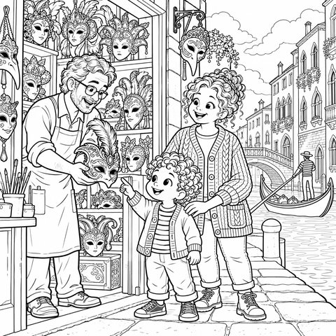
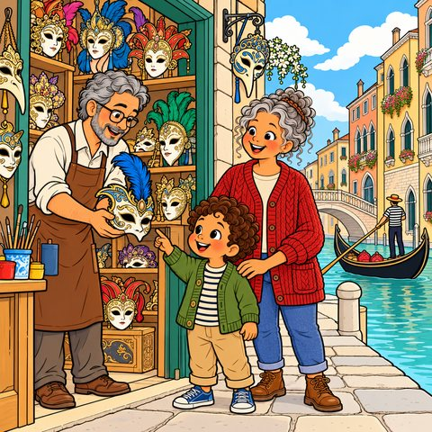


Milo's Colourful Picnic
Milo se Kleurvolle Piekniek
Sunshine yellow, grass green, splashy blue... Join Milo, Ouma and Dog on a colourful garden picnic, with big, simple pictures that small hands can colour all by themselves.
- 45 pictures, one per page
- Learn 10 colours, every picture labelled in English and Afrikaans
- Big, bold outlines made for first scribbles
- Single-sided pages, so markers never spoil the next picture
- Perfect for ages 1 to 3, on large 8.5 x 8.5 in pages


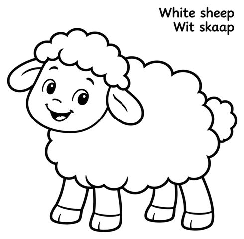
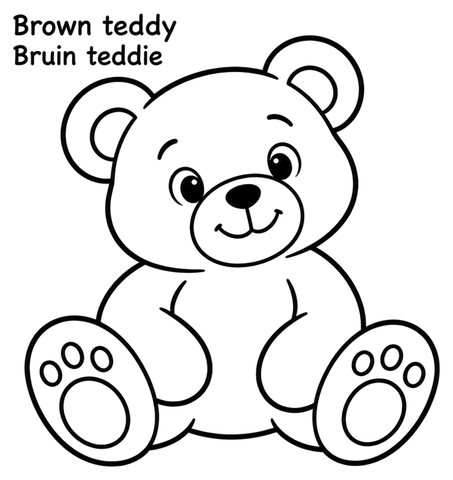
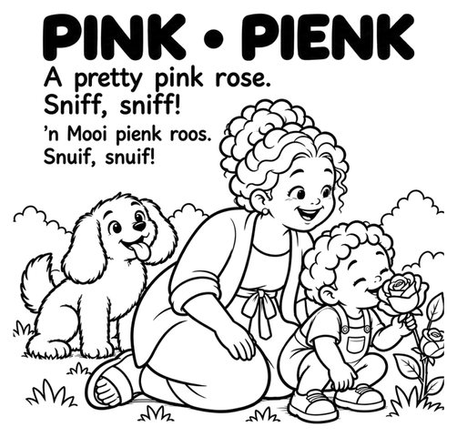
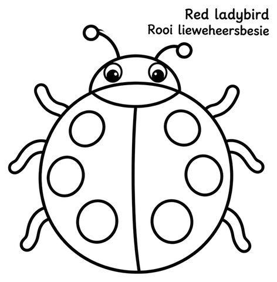
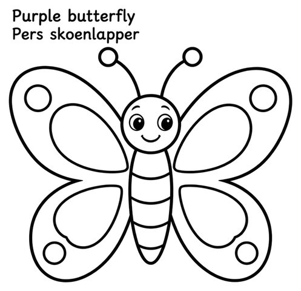
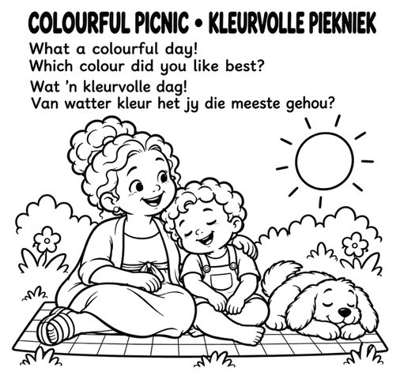

Milo's Four Seasons
Milo se Vier Seisoene
How does a little tree change in a whole year? Milo plants one with Mom and Dad, and Dog digs too! Puddles in spring, picnics in summer, crunchy leaves in autumn and tracks in the winter snow.
- 47 pictures through spring, summer, autumn and winter
- 20 story pages in English and Afrikaans
- Weather, clothes, flowers, fruit, baby animals and garden visitors for every season
- Single-sided pages, so markers never spoil the next picture
- Detailed, clear line art for ages 3 to 8, on large 8.5 x 8.5 in pages


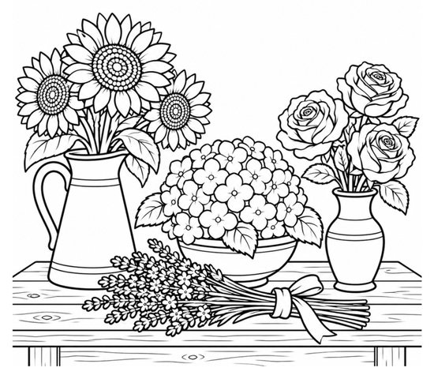
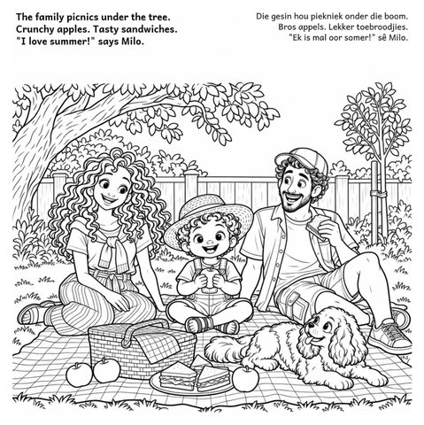
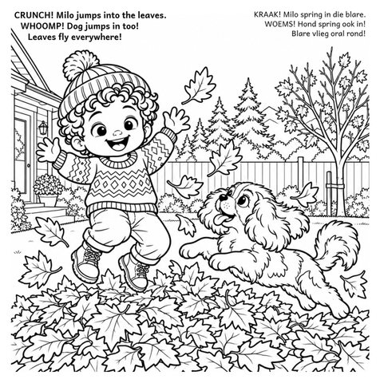
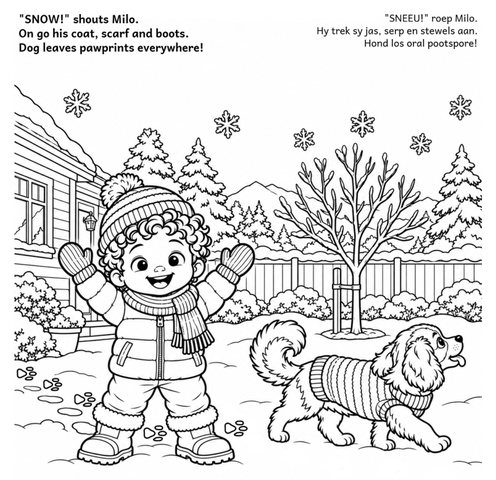
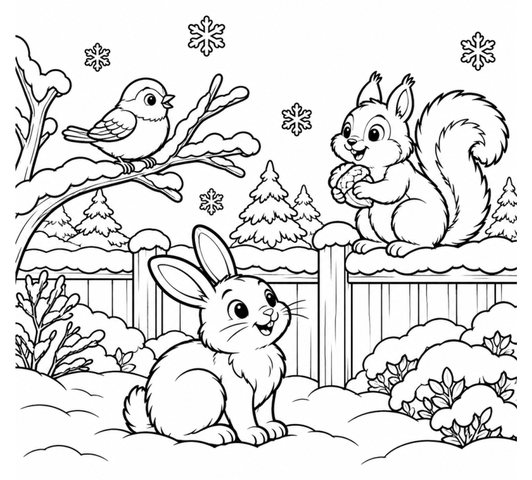
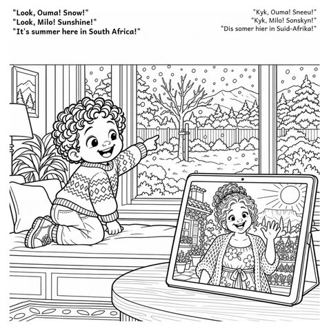

Milo's Food Adventures
Milo se Kosavonture
Where does our food come from? Milo and Ouma set out to find out: carrots and potatoes in the garden, wheat on the farm, a purple aubergine at the market and bread on a stick by the fire.
- 47 pictures from garden to table and around the world
- A little story in English and Afrikaans on every story page
- Foods from around the world: tacos, pizza, injera, curry, noodles, sushi and more
- Single-sided pages, so markers never spoil the next picture
- Detailed, clear line art for ages 4 to 8, on large 8.5 x 8.5 in pages


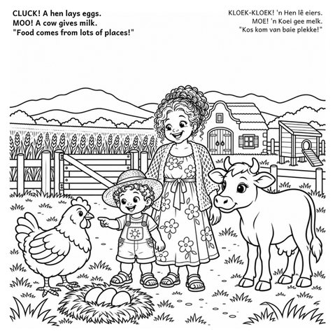
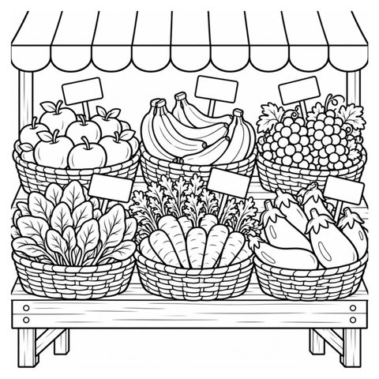
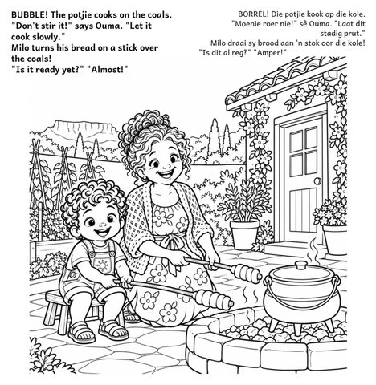
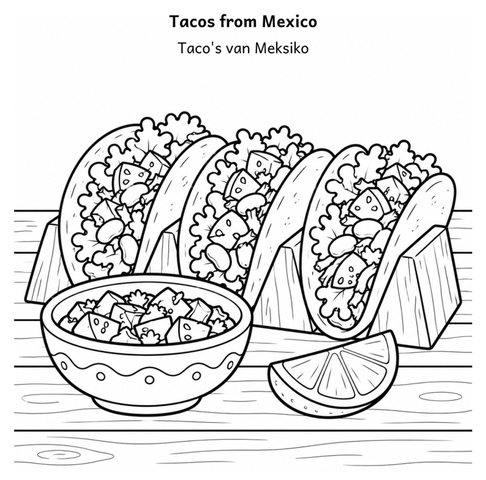